Filmen
Technik
Blende
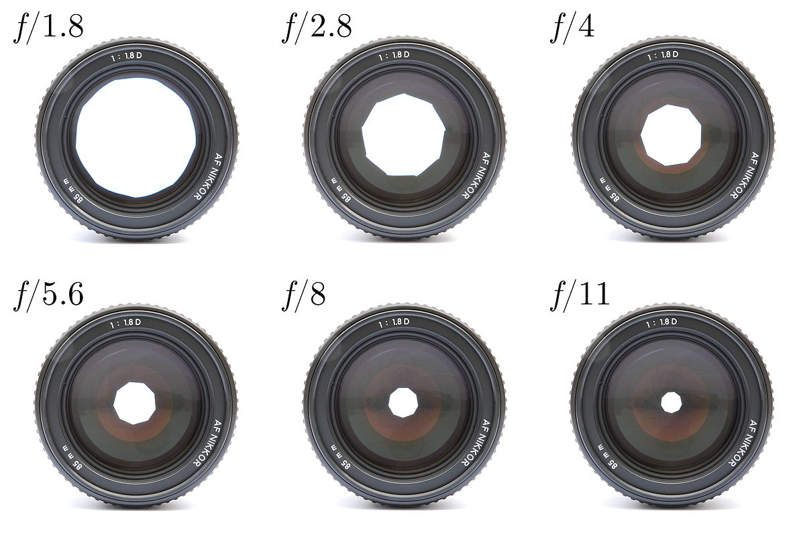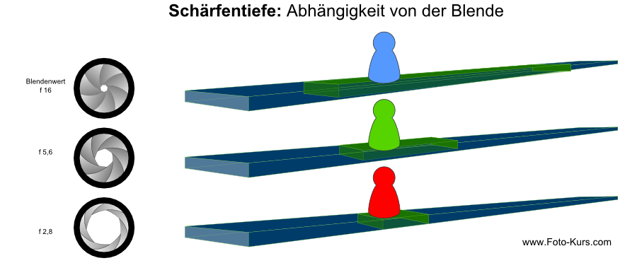
Die Grösse der Öffnung bestimmt das Ausmass an Licht, das während der Belichtung auf den Sensor fällt. Je grösser die Öffnung, desto geringer die Schärfentiefe des Bildes. Der grüne Bereich, ist der scharfgestellte Bereich.
Belichtungszeit
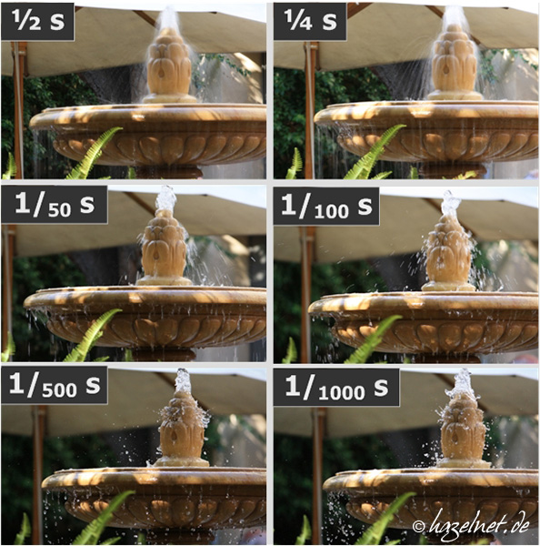 Je nachdem wie lang der Verschluss einer Kamera geöffnet wird, resultiert eine kurze oder lange
Belichtungszeit.
- Kurze Belichtungszeit: Kürzer als 1/125 sec
- Lange Belichtungszeit: Länger als 1/125 sec
- Kurze Belichtungszeiten werden benötigt um Bewegungsunschärfe zu vermeiden.
Lichtempfindlichkeit
Ähnlich wie beim chemischen Film kann der Bildsensor auf eine niedrigere bzw. höhere Empfindlichkeit eingestellt werden. Höhere Empfindlichkeiten werden erreicht, indem das analoge Signal des Sensors vor der Digitalisierung stärker verstärkt wird. Die Empfindlichkeit wird in ISO-Werten angegeben: 100 – 200 – 400 – 800 – 1600. Je niedriger der ISO-Wert, desto schärfer das Bild. Je höher der ISO-Wert, desto mehr Bildrauschen entsteht.
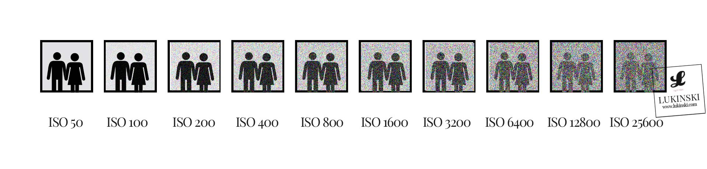Bildrauschen
Als Bildrauschen bezeichnet man die Verschlechterung eines digital aufgenommenen Bildes durch Störungen, die keinen Bezug zum eigentlichen Bildinhalt haben. Das Bildrauschen wird durch verschiedene Faktoren verursacht:
- Qualität des Sensors, z.B. die Pixeldichte
- Qualität der Signalverarbeitung
- Hohe ISO-Empfindlichkeit
- Hohe Sensortemperatur
Belichtung
Trifft gerichtetes Licht auf einen Gegenstand, so ist entscheidend, aus welcher Richtung das Licht im Verhältnis zur Aufnahmerichtung kommt. Grundsätzlich lassen sich folgende vier Varianten unterscheiden:
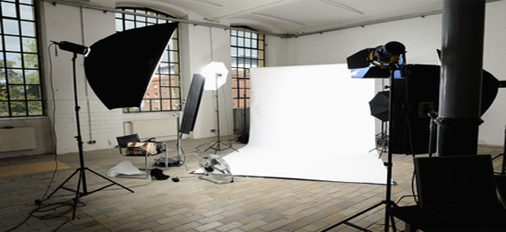| Vorderlicht | Das Licht strahlt in Aufnahmerichtung (Frontallich), der Fotograf hat die Lichtquelle im Rücken. Schatten sind kaum zu erkennen, weil sie sich hinter dem Motiv befinden. |
| Seitenlicht | Kommt das Licht von der Seite, zum Beispiel in einem Winkel von 30 bis 60 Grad zur Aufnahmerichtung, entsteht auf der dem Licht abgewandten Seite ein Schatten. Seitenlicht wirkt modellierend, es arbeitet Formen und Strukturen eines Motivs heraus. |
| Streiflicht | Heißt so, weil es in einem sehr spitzen Winkel auf das Motiv trifft und dabei Oberflächenstrukturen plastisch herausarbeitet. |
Softbox
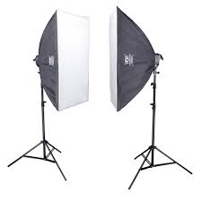Die Softbox bricht das Licht auf und macht es dadurch weicher. Sie wird in der Regel vor einem Blitz gespannt, sodass das Licht durch die eingespannten Tücher hindurch muss. Dabei gibt es Softboxen in ganz unterschiedlichen Formen. Softboxen kann man sowohl drinnen wie draussen einsetzen. Sie eignen sie sich sehr gut, um das Gesicht mit einem sanften Licht aufzuhellen. Im Gegensatz zu Aufsteckblitzen ohne Lichtformer wird das Licht bei Softboxen strickt in eine Richtung gelenkt. Dadurch kann es viel gezielter eingesetzt werden.
Reflektor:
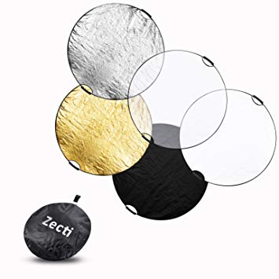Reflektoren lassen in der Regel kein Licht durch, sondern reflektieren die gesamte Lichtmenge, die auf sie trifft. Dabei ist es nicht von Bedeutung, ob das Licht von einem Blitz oder der Sonne kommt. Wer Reflektoren mit dem Sonnenlicht einsetzt hat den großen Vorteil, direkt zu sehen, wie das Licht genau hinfällt. So kann der Winkel des Reflektors schon vor der Aufnahme perfekt ausgerichtet werden, wohingegen bei Softboxen und Durchlichtschirmen immer einige Probeaufnahmen gemacht werden müssen, bis das Licht an der rechten Stelle sitzt. Reflektoren sind meist rund oder rechteckig, kommen mit einem stabilen Rahmen daher und besitzen eine große, mit Folie überzogene Fläche. Dabei gibt es nicht nur eine Variante von Reflektoren, sondern mindestens vier. Sie unterscheiden sich in der Farbe und Struktur der Oberfläche. Silberne Varianten liefern beispielsweise ein recht kühles Licht zurück, solche mit goldener Folie dagegen ein sehr warmes. Daneben gibt es oft noch solche mit einer weißen oder einer schwarzen Oberfläche, wobei letzteres genaugenommen kein Reflektor ist. Wer aber beispielsweise eine Gesichtshälfte des Models stark abdunkeln möchte, sollte direkt daneben einen schwarzen „Reflektor“ halten. Dieser schluckt das Umgebungslicht und sorgt dafür, dass kaum etwas auf die entsprechende Gesichtshälfte fällt.
Mikrophone
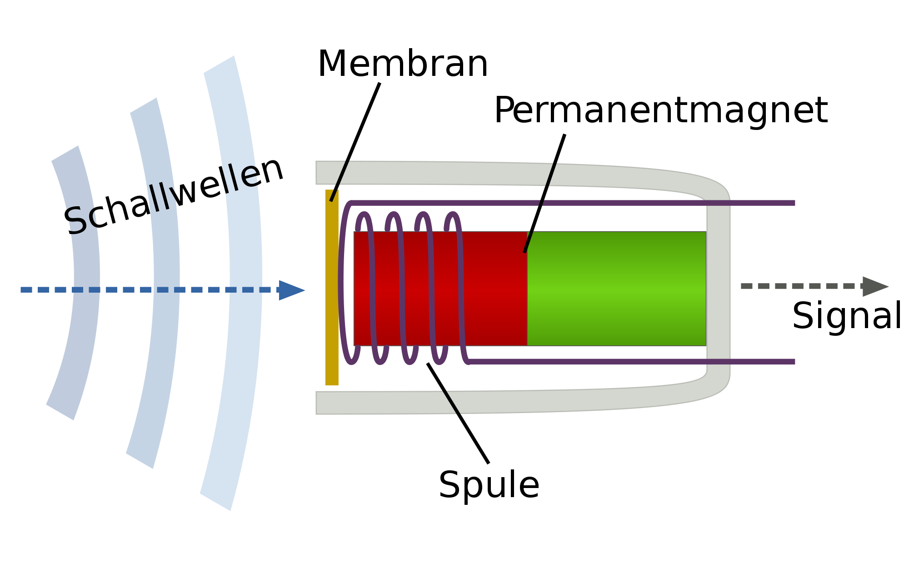 Dynamisches Mikrofon:
Bei einem dynamischen Mikrofon wird eine Spule in einem Magnetfeld bewegt und induziert dadurch eine
Spannung.
Es wandelt somit Schalldruckimpulse in elektrische Signale um. Es gibt hier zwei Bautypen.
Tauchspulenmikrofon: Der Name leitet sich von der technischen Anordnung der Bauelemente ab, in der
die
Magnet-Spule in das Magnetfeld „taucht“.
Bändchen Mikrofon: Bei dem Bändchen Mikrofon besteht die Membran aus einem zickzack-gefaltetem
Aluminiumstreifen, der sich zwischen zwei Dauermagneten befindet.
Kondensatormikrofon:
Bei einem Kondensatormikrofon bilden die Membran und eine feste Metallfläche den Kondensator. Durch
die
Schwingung der Membran ändert sich der Abstand dieser Beiden und erzeugt dadurch eine Kapazität, die
in
elektrische Signale umgewandelt wird. Es gibt hier zwei Bautypen.
Richtcharakteristik
Jedes Mikrofon weißt eine besondere Richtcharakteristik auf. Diese bestimmt aus welcher Richtung der
Schall empfindlich aufgenommen wird.
| Richtcharakteristik | Bedeutung |
|---|---|
| Kugelcharakteristik: 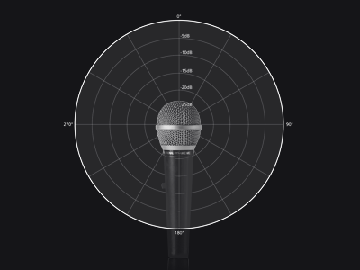 |
Es wird aus jeder Richtung Schall aufgenommen. |
| Nierencharakteristik: 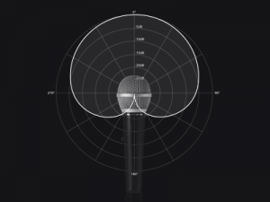 |
Der Schall von vorne wird am besten und von hinten am schlechtesten aufgenommen. Ihre Rückkopplungsanfälligkeit ist sehr gering. |
| Supernierencharakteristik: 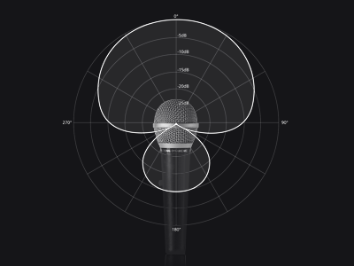 |
Der Schall wird nach vorne hin noch gerichteter aufgenommen. Allerdings reagiert ein Mikrofon mit Nierencharakteristik auch auf Schall von hinten, weswegen die Monitore mit Bedacht platziert werden müssen. |
| Achtcharakteristik: 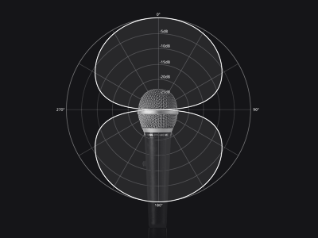 |
Der Schall wird gleichermaßen von vorne und hinten aufgenommen. Von den Querseiten nur minimal. Vor allem Bändchen- und Großmembranmikrofone weisen die Achtcharakteristik auf und können z.B. für sich zwei gegenüberstehende Sänger genutzt werden. |
Größe der Einstellung und deren Funktionen
| Perspektieve | Beschreibung |
|---|---|
| Weit (extremely long shot): | Ein Mensch der sich in einer Landschaft sich befindet ist kaum sichtbar; Panorama. |
| Totale (very long shot): | Ein Mensch ist in der Landschaft untergeordnet. Detailverlust bei Videoaufnahmen bzw. im Fernsehformat. |
| Halbtotale (long shot): | Den Menschen sieht man von Kopf bis Fuß; für kleinere Menschengruppen und körperbetonte Aktionen geeignet. Diese Größe gilt als optimal für den Fernsehbildschirm und wird in Videoaufnahmen der Totale vorgezogen, wenn es um Gruppenszenen geht. |
| Halbnahe (medium long shot, American knee shot): | Man sieht den Menschen von unterhalb des Knies an; etwa ¾ des Menschen. Zeigt den Menschen im räumlichen Kontext, oft in Zweier- oder Dreiergruppen. Diese Größe gilt als optimal bei der Menschendarstellung im Videoformat. |
| Amerikanisch (medium shot, American shot): | Man sieht den Menschen von Oberschenkel bis Kopf; wichtig ist, dass die Hand gezeigt wird. |
| Nahe (medium close up): | Kopf bis Mitte des Oberkörpers ist zu sehen, wird oft bei Dialogen verwendet. |
| Groß (close up): | Da man bei dieser Einstellung den Kopf sieht, wirkt es emotionalisiert und in der Regel identifikationsstiftend. |
| Detail (big close up): | Hier sieht man einen Ausschnitt des Kopfes oder eines Gegenstandes, wirkt bei Menschendarstellungen oft verfremdend. |
| Perspektieven | Beschreibung |
|---|---|
| Normalsicht: | Augenhöhe der Personen |
| Aufsicht (Vogelperspektive): | Mit dieser Perspektive verschafft der Zuschauer einen Überblick und kann bei leichter Erhöhung der Kamera einzelne Figuren sichten. |
| Untersicht (Froschperspektive): | Lässt Gegenstände oder Personen größer wirken. |
| POV-Einstellung (Point of view shot): | Dieser zeigt die Perspektive einer Person. Wird selten lange durchgehalten. Die Übergänge zwischen auktorialer und personaler (POV) Kamera-Perspektive sind fließend. Es gibt verschiedene Grade der Distanzierung bzw. Annäherung. |
| Over-the-shoulder-shot (OSS) (Aufnahme „über die Schulter“): | Wird häufig bei der Aufnahme von Gesprächen verwendet. Die OSS gibt die Perspektive der betrachtenden Person nicht ganz wieder, ist aber sehr nahe daran. |
| 180°-Regel: | Der Raum wird wie eine Bühne betrachtet; gefilmt wird nur innerhalb eines 180°-Kreises um die Personen oder Gegenstände herum. Abweichungen von dieser Regel verwirren den Zuschauer erheblich, können aber auch kunstvolle Effekte erzeugen. |
Kamerabewegung
In der Regel bleibt die Kamera unbeweglich (das Gefühl der Dynamik wird durch Schnitte erzeugt). Tatsächliche Bewegungen sind immer effektvoller. Kamerabewegung ist nicht nur eine Frage des Stils, sondern auch eine Technik.
| Kamera Bewegungen | Beschreibung |
|---|---|
| Schwenk (pan, panning): | Ein langsamer Schwenk wirkt beruhigend und verlangsamend; ein gleitender Schwenk tastet den Raum ab und liefert neue Informationen. Ein schneller Schwenk kann dramaturgische Funktionen übernehmen. |
| Der Reissschwenk (flash pan, swish pan): | Es ist ein ruckartiger Schwenk, dessen Inhalt eigentlich nicht mehr wahrnehmbar sind: eine neue Einstellung wird damit ohne Schnitt angesteuert. Gleichmäßige Schwenke durchzuführen verlangt ein gewisses können sowie den Gebrauch eines Stativs oder einer sog. Steadicam. |
| Kamerafahrt (tracking shot, travelling shot): | Erfolgt durch Mensch, Dolly, Auto, Hubschrauber, Pferd, Kran usw.; wird häufig benutzt, um den Zuschauer in einen Handlungszusammenhang hinein zu versetzen (Annäherung, Entfernung, Verfolgung). Je nach Lage: Ranfahrt, Rückfahrt, Seitfahrt (an mehreren Objekten vorbei), Parallelfahrt (parallel zu einem sich bewegenden Objekt) fühlt es sich anders an. Die Möglichkeiten, Kamerafahrten durchzuführen, sind auf den Fußweg beschränkt und wegen der notwendigerweise unruhigen Kamerahaltung zu vermeiden. |
| Zoom: | Zoom erzeugt durch Fokussierung einen ähnlichen Effekt wie eine Kameraranfahrt, verzerrt aber den abgebildeten Raum. |
| Bewegungsrichtung kann Parallel zur Bildfläche erfolgen; dies erzeugt ein eher distanziertes Verhältnis. Wenn Handlungsachse und Blickachse gleich sind (d.h. die Dinge kommen auf uns zu) fühlt sich der Zuschauer bedroht oder involviert. |
Ein guter film
Alles was ein guter Film Benötigt:
- Wenige Worte dafür wiederholt
- Lustig, Humor, Wortspiele (sich nicht zu ernst nehmen)
-
Der Spannungsbogen ist ein Wichtiger Bestandteil einer guten Geschichte. Zuerst beginnen alle Geschichten in einer Ruhephase. Die Hauptfiguren folgen ihren Alltag in ihrer normalen Umgebung. Das ist die Zeit der Einführung. Danach fängt der erst Konflikt an. In der die Hauptfigur aus ihrem Alltag herausgezogen wird und auf ein Problem reagieren muss. Man muss beachten das die Leser/ Zuschauer recht schnell klar wird, welches Problem di Hauptfigur hat und welches Ziel die Hauptfigur verfolgt. Damit fängt man an Spannung aufzubauen, denn den Zuschauer werden sich Bewusst, dass die Hauptfigur ihr Ziel nicht einfach erreichen wird und er auf seinem Weg mehrere Hindernisse überwinden muss. Diese Phase nennt man auch Konfrontation. Besonders massive Hindernisse nennt man auch Plot Point. Nach solch einer Spannungsphase kann durchaus eine Beruhigung-Phase eintreten aber nur kurz, sodass die Spannung nicht abbaut. Das ist eine kurze Atempause bevor der Film zu Ende geht. Denn schliesslich sollte man den Höhepunkt des Films erreichen, welches am die schwierigste Aufgabe des ganzen Filmes darstellt. Sobald diese Aufgabe geschafft wurde, sollte der Film möglichst schnell beendet werden. Da alles was nachher kommt nur langweilig sein kann.
- Neugierig machen
- Kurzweilig, merkfähig
- Man weiss sofort um was es geht
- Zeitgeist
- Verschiedene Perspektiven/ Bewegungen
- Testimonial, Success Stories
- Spricht Emotionen an
- Detailaufnahmen
- Musik passend zum Gefühl
- Guter Verständnis
- Verschiedene Geschwindigkeiten
- Kunde steht im Mittelpunkt
- Bilder passen zu Gesprochenem
- Nicht übertreiben, nicht zu hochnäsig
- Kernaussage am Schluss
- Besonderes Thema
- Man identifiziert sich fiebert mit
- Spannung steuern mit Sound
- Spiel mit Rhythmen
- Lässt Raum für Interpretation
- Gefühle durch Details
- Wechsel in Raum und Zeit
- Auf das Wesentliche reduziert
Vor dem dreh Nach dem dreh
Vor und nach dem Dreh sollte man diese Dinge beachten:- Akku aufladen
- Daten importieren redundant(Babck-Up)
- Beim nächsten Gebrauch kann getrost formatiert werden